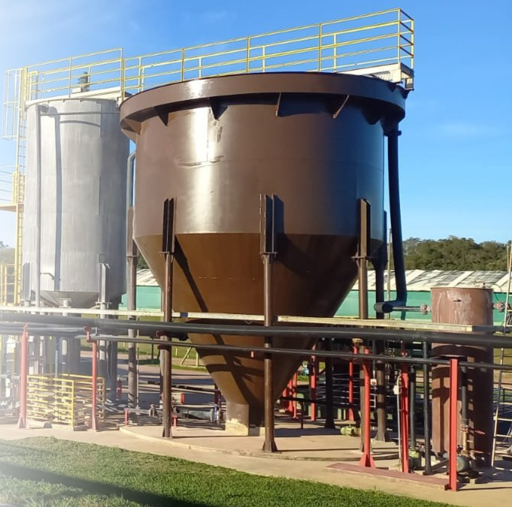
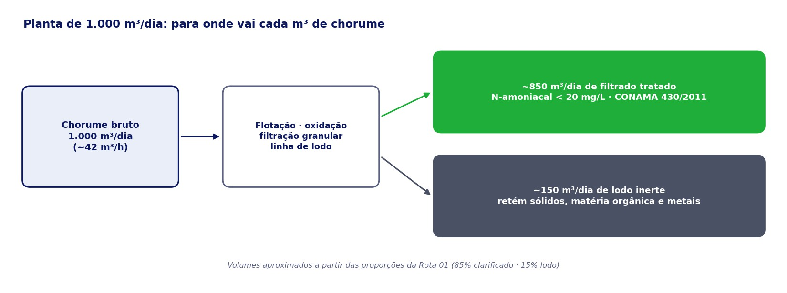
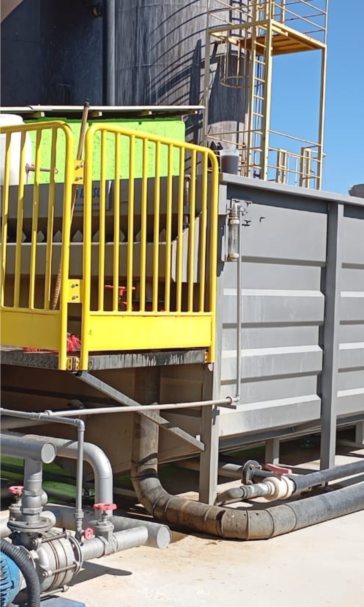
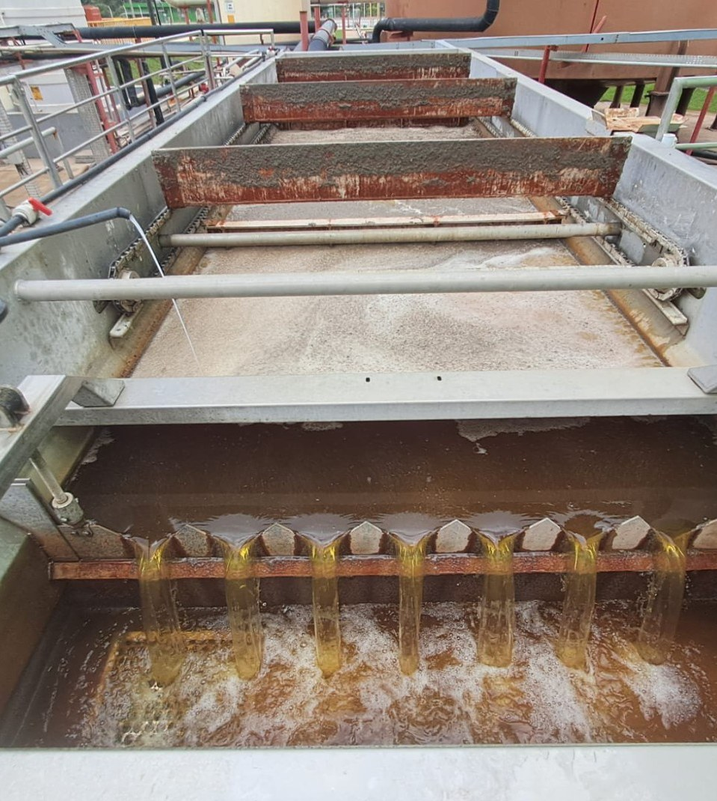
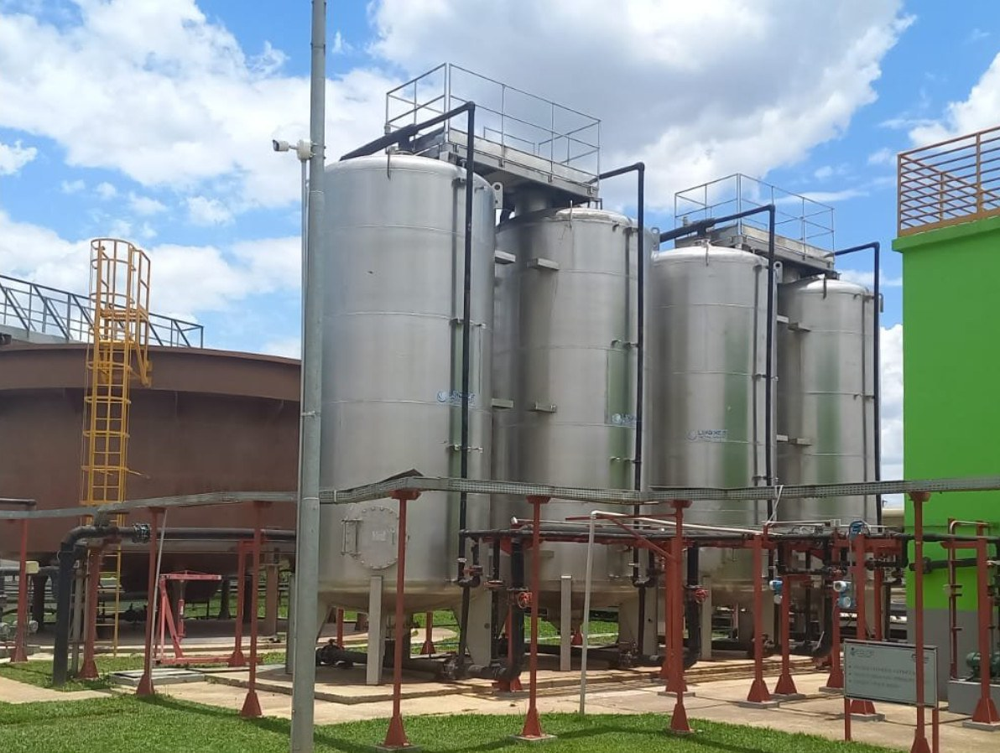
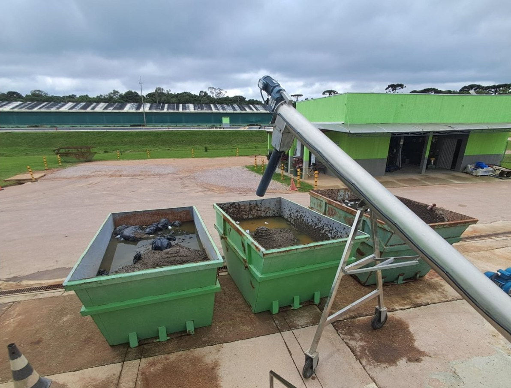
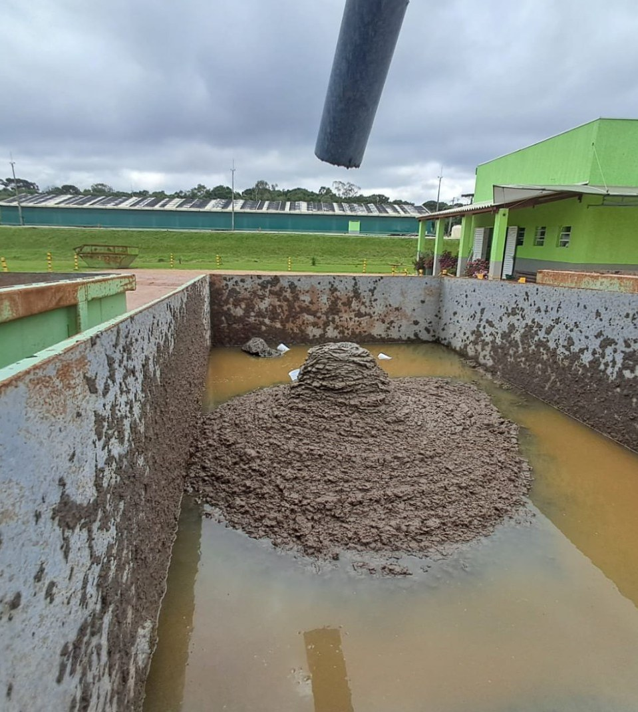

Problema / desafio do cliente
Um aterro sanitário de grande porte precisava tratar cerca de 1.000 m³/dia de chorume com desempenho estável e dentro dos padrões de lançamento, aproveitando parte do sistema existente, baseado em processo biológico, sem grandes aumentos de custo.
A GETA aceitou o desafio de transformar essa planta em uma estação de escala industrial comprovada, com a tecnologia própria de tratamento de chorume.
Contexto e características do processo
- Aterro sanitário na Região Metropolitana de Curitiba (PR).
- Capacidade de 1.000 m³/dia de chorume.
- Trabalho iniciado no segundo semestre de 2023, a pedido do operador do aterro: desenvolvimento tecnológico, projeto e supervisão operacional.
- Unidades de flotação, filtração e linha de lodo integradas em um só sítio.

Diagnóstico e dados analisados
- Chorume com alta carga de sólidos, matéria orgânica, nitrogênio amoniacal e metais.
- Necessidade de atender à CONAMA 430/2011 para o lançamento do efluente tratado.
- Destino seguro para o lodo gerado, sem risco de lixiviação na disposição final.
Metodologia utilizada
- Caracterização do chorume e ensaios de tratabilidade.
- Definição da rota tecnológica pelo perfil do efluente.
- Projeto das unidades de flotação, filtração e linha de lodo, aproveitando estruturas existentes.
- Acompanhamento da implantação, partida e supervisão técnica da operação.
Solução de engenharia desenvolvida
A planta aplica a rota de flotação, oxidação e filtração granular da tecnologia própria da GETA:
- Flotação por ar dissolvido (DAF) com insumos específicos, gerando clarificado com turbidez < 10 NTU;
- oxidação e filtração granular, que levam o N-amoniacal a menos de 20 mg/L;
- linha de lodo que produz lodo inerte e hidrofóbico, que retém sólidos, matéria orgânica e metais.

Tecnologias e processos envolvidos
- Flotação por ar dissolvido (DAF).
- Oxidação e filtração granular.
- Linha de lodo com condicionamento químico e desaguamento.
- Tanques de processo e decantação.

Modelagem, simulação e ferramentas computacionais
Modelos, simulações e ferramentas usados (balanços, CFD, Python, MATLAB, redes neurais, DMD, dashboards…) e o que cada um permitiu avaliar ou decidir.
Resultados obtidos
- 1.000 m³/dia de chorume tratados em escala industrial.
- Filtrado com N-amoniacal < 20 mg/L, dentro da CONAMA 430/2011.
- Cerca de 85% do volume recuperado como efluente tratado.
- Lodo inerte (cerca de 15% do volume), hidrofóbico e sem lixiviação, para disposição segura.
- Planta de referência que comprova a tecnologia própria da GETA em operação contínua.

CAPEX/OPEX e análise técnico-econômica
Quando aplicável: estimativas de CAPEX e OPEX, comparação entre alternativas, custo por m³ ou por tonelada, payback.
Escopo e responsabilidades da GETA
A GETA foi responsável por:
- desenvolvimento tecnológico e definição da rota;
- projeto das unidades de tratamento;
- acompanhamento da implantação e partida;
- supervisão técnica da operação.
Principais entregáveis
- Projeto da rota de tratamento e das unidades.
- Planta de 1.000 m³/dia em operação.
- Procedimentos e supervisão operacional.
Galeria


